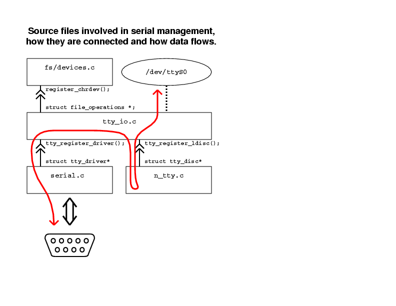
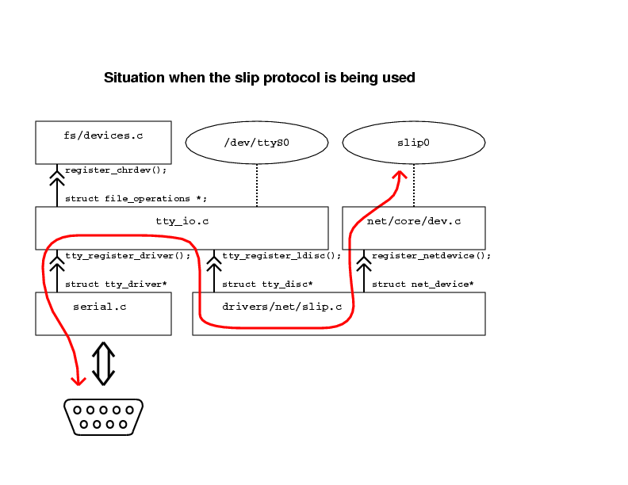
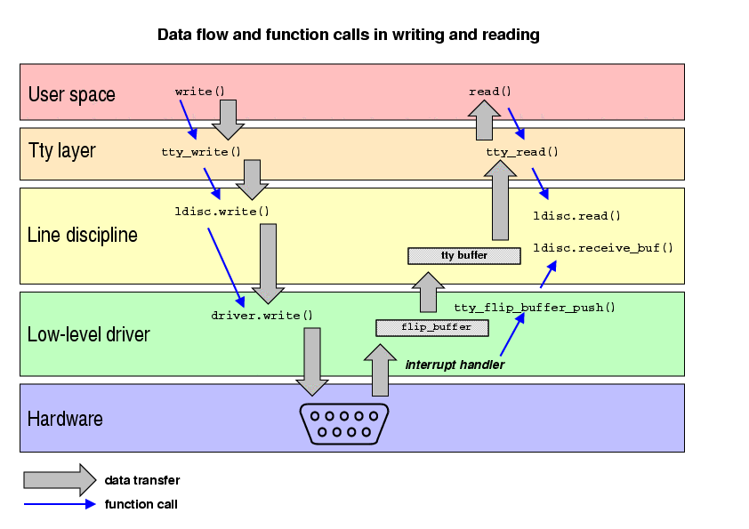

by Alessandro Rubini
This article is meant to show the internal structure of device drivers for serial ports, and how they can be perform a variety of services including ppp and slip. The discussion is based on 2.4 source code, but most of the material applies equally well to 2.2 and 2.0.
When discussing the software implementation of a serial port, the
first thing that comes to mind is /dev/ttyS0, as this is
the most known character of serial communication, at least on PC-class
computers. Since /dev/ttyS0 is a file special file of
type ``char'', a serial driver is often considered a conventional char
driver, and phrases like ``char drivers are exemplified by serial
ports'' come to mind. Unfortunately, the exemplification is basically
wrong.
If you look in the real code, you'll see how the ``char driver'' idea only scratches the surface of what a serial driver is, and that's why a serial driver doesn't quite lend itself to be the prototypical example of char drivers.
Actually, the ``char driver'' abstraction doesn't correctly describe serial device drivers because there is not specific major number associated to each of them. Actually, you can have add-on serial ports that plug in your computer and are managed by specific kernel modules but do not get assigned a new major number.
Looking in /proc/devices you'll find that major 4 is
associated to the ttyS driver, but that's a white lie:
text-mode console devices belong to major 4 too, and, actually,
Linux-2.0 used the more general ``ttyp'' name for major
number 4.
What makes a serial port different from a more conventional char driver like the printer port or a tape drive is its being part of the tty abstraction. Since a serial communication channel can be used to plug an alphanumeric terminal, a serial device driver must be integrated in the terminal emulator layer, called the ``tty'' abstraction, from the name of ancient tele-type devices (still in wide use when Unix was being written)
Flexible and powerful tty handling is made up of several building
blocks. You must consider that there exist a huge range of tty
devices, from VGA and frame-buffer based text consoles up to serial
communication channels and virtual terminals as exemplified by (but
not limited to) the xterm application.
Figure 1 shows the various building blocks that are involved with operation of a serial driver. Most files live in drivers/char, if not, the directory specified is relative to the root directory of the kernel source tree. The figure shows how each building block is registered (registration is there in order to allow each block to be implemented as a kernel module).

Figure 1
The image is available as PostScript here
The file fs/devices.c exports the interface used by most
system resources to register device drivers, each identified by a
major number). This is how tty_register_driver gets hold
of a major number if it needs it to support the new tty driver (an
object that is introduced below). The function is defined by
tty_io.c, which also defines the file operations that are used
to act on tty devices. File operation are the driver-specific
implementations of read, write and the other system
calls that relate to file access.
What serial.c or other serial drivers do in order to run
their own code is registering a struct tty_driver object.
The ``driver'' declares the major number and the range of minor
numbers it is going to manage, as well as a number of operations it
supports. The operations are concerned with input and output of data
as well as flow control and communication with higher layers. The
implementation of these operations, together with interrupt handling
and actual input/output of data is the scope of hardware
drivers for serial ports.
The data flow between user space and the serial device driver,
therefore, is mediated by the tty layer, that implements
functionalities that are common to all tty-type devices. However, not
all of tty management is defined be tty_io.c, most of the policy
is define by the line discipline, a software module that
disciplines how a physical tty I/O line is used. The default line
discipline for Linux is called N_TTY, a name that will be
explained later. If n_tty is active, input data reaches user
space via the usual /dev/ interface and the standard terminal
I/O handling (i.e, all the features defined by
<termios.h>, that make terminal handling so
powerful and so difficult).
The red line in figure 1 shows the logical flow of data, from the
hardware channel up to the user-accessible device special file and
backwards. What keeps it all together is the struct tty
data item, that in itself includes a pointer to all three relevant
objects: the file_operations structure that is used in
communicating with user space, the tty_driver structure
that hosts functions to control real hardware, and the
tty_ldisc structure that lists all entry points to the
current line discipline.
Sure this kind of arrangement may look exceedingly complex. However, as usual, the extra complexity is meant to make things ultimately more flexible and powerful. Adding support for new serial hardware may be different from writing a conventional char driver, but this setup guarantees full tty emulation on all serial ports without any code replication or unneeded complexity in the low-level driver.
Another advantage of this kind of arrangement, possibly even more important than generalized tty support, is in the ability to change the line discipline associated to each tty device. Unlike typical device drivers, whose task is connecting an hardware device with user space, a serial driver has nothing to do with user space; data it receives from the hardware is passed over to the line discipline, and data it receives from software comes via a line discipline method.
A serial driver, therefore, is not concerned in any way with data
transfer to/from user space. The task is left to the line discipline,
together with all the hairy termios handling. This makes
it possible for serial data to be steered to a different user-space
access facility than its associated ttyS device special file.
Whenever you dial your modem with ppp to connect to the Internet, or use the simpler slip communication protocol to connect the PC to your Linux palm-top, you are exploiting the complexity just shown. Both ppp and slip implement their own line discipline; when either of them is run, the tty device is switched to a different line discipline in order to detach /dev/ttyS0 from the serial port and keep all of serial communication within the kernel.
Figure 2 shows the conceptual layout in the slip case. I chose not to use ppp in the example to avoid extra complexity or incorrect simplification. In version 2.4 of the Linux kernel the ppp software implementation is split in several files (once again, it's more structured to be more powerful and avoid code replication across similar devices). The two protocols behave otherwise in the same manner.

Figure 2
The image is available as PostScript here
The role of the slip driver, as shown, is registering both a
network device (depicted as slip0 and a line discipline
for tty devices (called N_SLIP). When the tty device is
switched to the new line discipline, TCP/IP communication can begin.
The new line discipline sets up data transfer between serial hardware
and the network layer; when it is active, nothing can be read from or
written to the associated /dev/ttyS device. As soon as the
device (/dev/ttyS0 or equivalent) is closed, the default
line discipline is restored. Actually, that's the main reason why
neither slattach nor pppd can exit after setting up the
network channel.
There are three main data structures involved in tty management (and thus, serial communication):
struct tty_struct: this is the data structure that
stays at the core of tty management. It includes both of the
following structures. An instance of tty_struct
is created any time a new tty device is opened, and exists
until it is last closed. Note that actual code (in
tty_io.c) is complicated by the need to preserve
termios settings across close and open, at least
for some of the ttys (like serial ports).
struct tty_driver: this is the low level hardware
handling. At open time, the function get_tty_driver
retrieves the driver for the current tty an places it into
the driver field of tty_struct, where
it is further accessed.
struct tty_driver {
/* the driver states which range of devices it supports */
short major; /* major device number */
short minor_start; /* start of minor device number*/
short num; /* number of devices */
/* and has its own operations */
int (*open)();
void (*close)();
int (*write)();
int (*ioctl)(); /* device-specific control */
/* return information on buffer state */
int (*write_room)(); /* how much can be written */
int (*chars_in_buffer)(); /* how much is there to read */
/* flow control, input and output */
void (*throttle)();
void (*unthrottle)();
void (*stop)();
void (*start)();
/* and callbacks for /proc/tty/driver/ */
int (*read_proc)();
int (*write_proc)();
};
struct tty_ldisc: the structure is referenced by the
ldisc field of tty_struct. At open
time the field is initialized to reference n_tty, and
user programs can change the current line discipline via
ioctl, as explained in a while.
struct tty_ldisc {
/* routines called from above */
int (*open)();
void (*close)();
ssize_t (*read)();
ssize_t (*write)();
int (*ioctl)();
/* routines called from below */
void (*receive_buf)();
int (*receive_room)();
void (*write_wakeup)();
};
The structures are declared in three different files:
tty_struct is a complex structure defined in
include/linux/tty.h, a header generally devoted to tty
issues. Actually, it is not as interesting to look at as the other
two, because user modules rarely need to directly interact with it.
include/linux/tty_driver.h and
include/linux/tty_ldisc.h are devoted exclusively to the
definition of the relevant data structures. The files carry a
prominent comment block that explains the exact role of most of the
fields. Unlike tty_struct, both tty_driver
and tty_ldisc are actively used by authors of device
driver modules.
Typically, a kernel module that supports a new kind of hardware
transmission will implement a tty_driver structure, while
a module that uses generic serial hardware for a new purpose will
implement a line discipline. For example, if you have a special
keyboard that transmits data via a standard RS-232 serial port, you'll need a
line discipline that gathers data packets and send them to either
the input mechanism (see drivers/input/input.c and
include/linux/input.h) or to the generic keyboard driver (using
handle_scancode(), exported by
drivers/char/keyboard.c).
Listing 1 shows the most important operations declared by the
tty_driver data structure, while listing 2 depicts those
exported by the line discipline. Note that those listings are by
no means complete, if you look for authoritative information,
you should read the relevant header files.

Figure 3
The image is available as PostScript here
Figure 3 visualizes how data flows from user space down to hardware interfaces and backwards. It refers to the specific case of a standard PC serial port with the default line discipline attached. The logical stacking of line disciplines (near to user space) and tty drivers (near to the hardware itself) should be apparent.
While writing data is straightforward, the reading process may need some explanation. Reading is more complex than writing because there's no direct causal relationship between hardware (that pushes up data when it arrives) and user space (that requests data when it needs it). The solution is, as you expected, use of buffering: data received by hardware remains on hold in a kernel buffer until a user space program requests it; whenever a user program asks for data and the buffer is empty, the program is put to sleep, and is awaken only when the buffer is filled with at least partially. Note that a write buffer exists as well, however, the write implementation is much more straightforward because each step towards hardware level is directly driven by the step above it. There are no uncontrolled delays in data transmission, and the buffer is only needed to decouple hardware transmission from program flow. The figure does not show it for simplicity.
When tty devices are concerned, the read buffer lives within the
tty data structure; while this makes struct tty_struct
considerably bigger, there is no point in keeping the buffer
elsewhere: each tty can't transfer data without a buffer, and tty
devices are dynamically allocated so no memory is wasted in buffers
for unused devices.
Actually, tty-related buffering is organized in two levels: kernel developers chose to provide both a ``conventional'' buffer, where data is waiting to be eaten by the line discipline (i.e., in the default case, being transferred to user space), and a ``flip'' buffer, used by hardware routines to store incoming data as quickly as possible, without the need to synchronize for concurrent access: flip buffers are exclusive ownership of the hardware device, which eventually calls tty_flip_buffer_push to deliver data to the tty buffer, where the line discipline pulls it from.
It's interesting to note that the flip buffer is laid out as two physical buffers that are alternatively written to. This allows more reliable operation, as the interrupt handler will always have a whole buffer available for writing. The function flush_to_ldisc, called by the low-level driver and part of the tty layer (i.e., tty_io.c), arranges for the flip buffer to be flipped, before the interrupt handler returns. This layout, by the way, is why the flip buffer is called so.
Kernel code, as stated, can register a new line discipline with the tty subsystem, and this is also available to modularized code. You could, therefore, write your own line discipline and register it. Each line discipline is identified by a number, and a symbolic name for it is available, as common with C programming. Assigned numbers are given a name by include/asm/termios.h.
The default tty line discipline is identified by a number of
N_TTY, PPP uses N_PPP and so
on. Unfortunately, no line discipline numbers have currently been
reserved for ``local use'', so you can only experiment with the
numbers that are not used on your system. Actually, no official driver
currently used N_MOUSE, so this is a good bet for your
custom line discipline.
In order to activate the N_MOUSE line discipline, the
user space program must use this code:
#include
If you noted that drivers/char/serial.c exports a function
called register_serial, you may wonder what's its role in the
tty architecture just outlined. As a matter of facts, the facility is
only an hook offered by the ``standard'' serial tty driver in order to
easy run-time addition of standard serial ports. The ``serial'' being
registered is not a whole software module, but rather, only a
definition or parameters to use for the new serial port. The
parameters are described by struct serial_struct, which
in turn is defined by include/linux/serial.h; they are used by
the conventional serial driver, exploiting the de-facto
standardization that exists on PC serial ports. You can't use the
function to register a driver for serial hardware of a different kind
than a 16450 or compatible UART. The list of supported hardware for
the PC platform is found in the array uart_config, in
serial.c. Other platforms offer different implementations for
register_serial.
Serial ports can also be used as console devices, and this kind of functionality is separate from tty management. Actually, the console device sits in the lowest levels of Linux, as it must bring critical information out of the system as soon as possible. It just can't be involved in all the complexity of tty management. But in version 2.4 (as well as 2.2) console management is a world of its own, with its own data structures and functions that make it very flexible yet reliable. Discussion of such world is best delayed to next month's column.
Verbatim copying and distribution of this entire article is permitted in any medium, provided this notice is preserved
rubini@gnu.org.